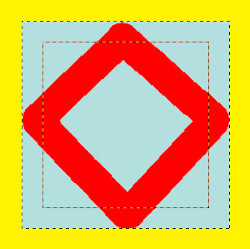

This page lets you customize the default appearance of image windows, for normal mode and for fullscreen mode.
All settings in this section can be overridden by the commands in the View menu.
As únicas partes que podem precisar de mais explicações são as relacionadas ao preenchimento. “Preenchimento” é a cor mostrada em torno das bordas da imagem, se não ocupar toda a área da tela (mostrada em cinza claro em todas as figuras aqui). Você pode escolher entre quatro tipos de cor para o preenchimento: a cor especificada pelo tema atual, usar os tons claros ou os tons escuros do padrão de xadrez que é exibido nas áreas transparentes, ou usar uma cor personalizada, que pode ser definida com o botão de “Cor de preenchimento da tela”.
Keep canvas padding in "Show All" mode: in this mode (Seção 5.3, “Show All”), you can see pixels outside the canvas. When this option is not checked, the area outside the canvas is filled with a checkerboard pattern, even if you have selected a custom padding color. When the option is checked, the canvas has the custom padding color.
Figura 15.122. Exemplo

A cor de preenchimento é amarela. “Manter preenchimento da tela” não está marcado.

A cor de preenchimento é amarela. “Manter preenchimento da tela” está marcado.